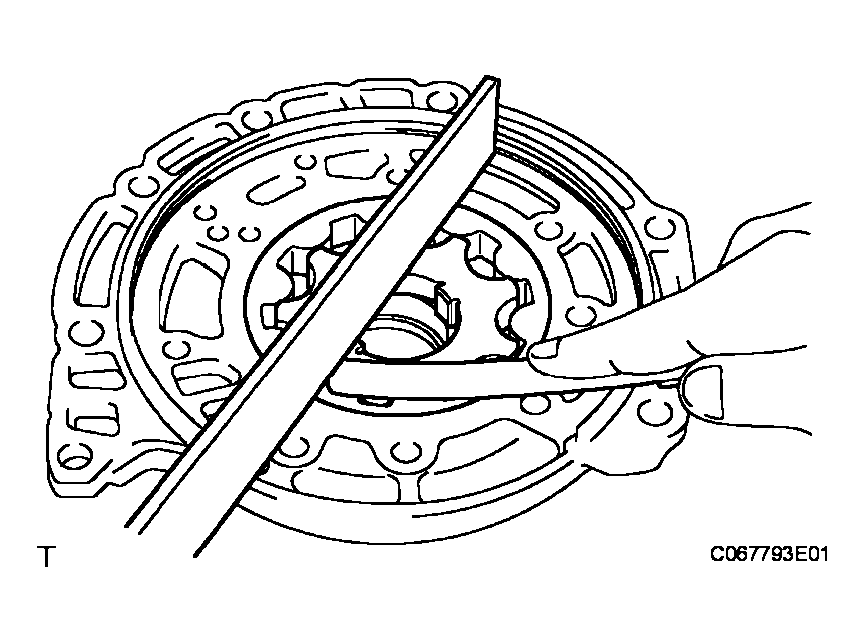

Oil Pump: Inspection
- INSPECT STATOR SHAFT ASSEMBLY
- Using a dial indicator, measure the inside diameter of the stator shaft bushings.
Standard inside diameter: 21.500 to 21.526 mm (0.84646 to 0.84748 in.)
Maximum inside diameter: 21.526 mm (0.84748 in.)
If the inside diameter is greater than the maximum, replace the stator shaft.
- Install the input shaft assembly to the stator shaft assembly, check that the input shaft assembly turns smoothly.NOTE: Replace the stator shaft assembly with a new one if rough movement or unusual noise is identified. When replacing, inspect the input shaft's contact surface with the bearing and if any damage or discoloring is found, replace the input shaft with a new one.
- Using a dial indicator, measure the inside diameter of the stator shaft bushings.
- INSPECT CLEARANCE OF OIL PUMP ASSEMBLY
- Using a feeler gauge, measure the tip clearance between the driven gear teeth and drive gear teeth.
Standard tip clearance: 0.10 to 1.15 mm (0.0039 to 0.0059 in.)
Maximum tip clearance: 0.15 mm (0.0059 in.)
If the tip clearance is greater than the maximum, replace the oil pump body sub-assembly.
- Push the driven gear to one side of the body. Using a feeler gauge, measure the clearance.
Standard body clearance: 0.07 to 0.15 mm (0.0028 to 0.0059 in.)
Maximum body clearance: 0.15 mm (0.0059 in.)
If the body clearance is greater than the maximum, replace the oil pump body sub-assembly.
- Using a steel straightedge and feeler gauge, measure the side clearance of both gears.
Standard side clearance: 0.02 to 0.05 mm (0.0008 to 0.0020 in.)
Maximum side clearance: 0.05 mm (0.0020 in.)
If the side clearance is greater than the maximum, replace the drive gear, driven gear or pump body.

Courtesy of © TOYOTA, LICENSE AGREEMENT TMS1002Standard driven gear thickness
STANDARD DRIVEN GEAR THICKNESS SPECIFICATIONSNo. Thickness 1 9.44 to 9.45 mm (0.3709 to 0.3713 in.) 2 9.45 to 9.46 mm (0.3713 to 0.3717 in.) 3 9.46 to 9.47 mm (0.3717 to 0.3721 in.) 4 9.47 to 9.48 mm (0.3721 to 0.3725 in.) 5 9.48 to 9.49 mm (0.3725 to 0.3729 in.)
- Using a feeler gauge, measure the tip clearance between the driven gear teeth and drive gear teeth.
- INSPECT FRONT OIL PUMP BODY SUB-ASSEMBLY
- Using a caliper gauge, measure the inside diameter of the oil pump body bushing.
Standard inside diameter: 38.113 to 38.138 mm (1.5005 to 1.5015 in.)
Maximum inside diameter: 38.138 mm (1.5015 in.)
If the inside diameter is greater than the maximum, replace the oil pump body sub-assembly.
- Using a caliper gauge, measure the inside diameter of the oil pump body bushing.